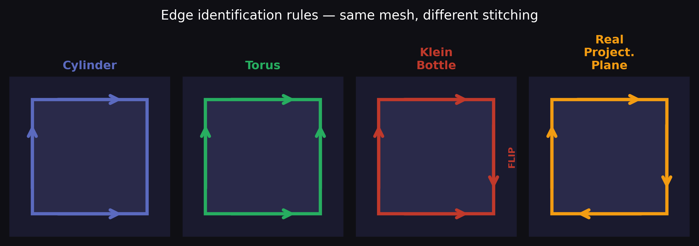
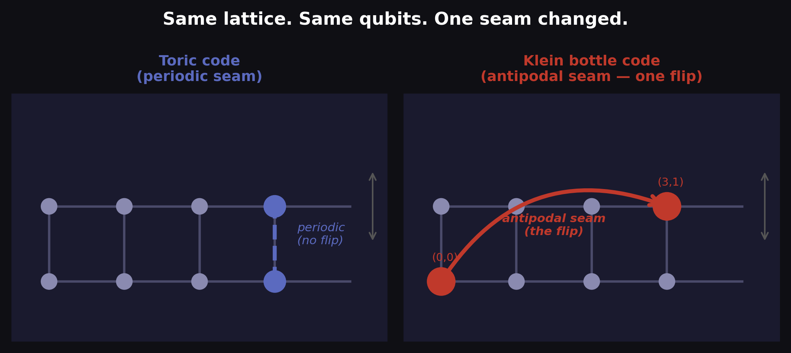
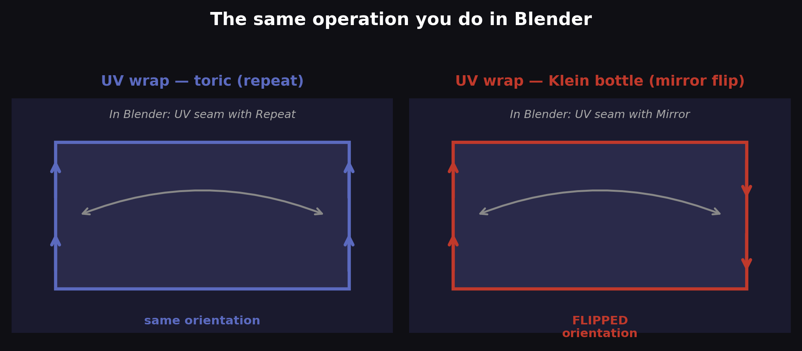
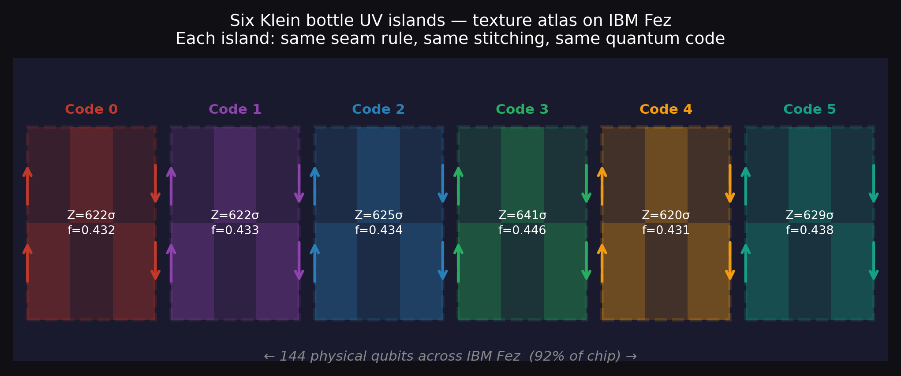

You have a flat rectangular mesh. Four vertices across, two rows high. You want to wrap it into a surface.
Before you touch a single vertex, you face a choice that has nothing to do with shape, scale, or subdivision. You have to decide how to stitch the edges.
In Blender, you call this UV unwrapping. You mark seams — the cuts that tell the renderer how to flatten the surface into texture space — and then you choose how the edges of that flat rectangle connect when the mesh wraps back into 3D. Do the left and right edges join with the same orientation? Does the top wrap to the bottom straight, or with a flip?
These choices feel like texture settings. They are not. They determine what surface you are building.
A rectangle with its edges stitched straight in both directions is a torus — a donut. A rectangle with one pair of edges stitched in opposite orientations is a Klein bottle — a surface that has no inside or outside, no consistent notion of which way is "up."
The mesh topology is not a consequence of the geometry. It is a consequence of the seam.

Figure 1 — The same rectangular mesh, four different seam rules. Arrows show edge identification and orientation. One flip changes the topology completely.
This is the insight that quantum error correction has been sitting on for thirty years without noticing: the quantum code you get from a lattice of qubits depends entirely on which seam rule you apply when you stitch the lattice. And until very recently, every quantum error-correcting code ever run on real hardware used the same seam.
A flat rectangle has four edges: top, bottom, left, right. You can identify pairs of opposite edges — stitch top to bottom, stitch left to right — with either matching or opposing orientation. The combinations give you four distinct surfaces.
No vertical stitching: a cylinder. Open top and bottom. Orientable, simple.
Both edges straight: a torus. Top joins bottom, left joins right, all arrows pointing the same way. This is the donut. It is orientable — you can define a consistent "up" everywhere on the surface. The standard quantum toric code lives here.
One pair flipped: a Klein bottle. Top joins bottom straight, but left joins right with a 180° flip — what a 3D artist would call a mirror seam instead of a repeat seam. The surface becomes non-orientable. A traveler walking across it returns to their starting point with left and right hands swapped. There is no inside or outside.
Both pairs flipped: the real projective plane. Non-orientable, and stranger still — it cannot be embedded in three-dimensional space without self-intersection.
The Klein bottle sits exactly one seam-flip away from the torus. Everything else — the shape of the mesh, the number of vertices, the edges, the connectivity — stays the same. Only the seam rule changes.
IBM Fez is a 156-qubit superconducting processor. Its physical connectivity forms a graph — the heavy-hex lattice — that engineers design to minimise crosstalk between qubits. From a topology standpoint, this lattice is a graph embedded in a surface. The specific surface depends on the boundary conditions.
The surface code, which Google, IBM, and Quantinuum use for their logical qubit experiments, wraps the heavy-hex lattice as a torus. Left connects to right, top connects to bottom, same orientation on both. This is the Blender "Repeat" setting on both axes.
In our experiment, we changed one seam.
The left-to-right connection stays the same — straight, periodic. But the top-to-bottom connection gets a flip: instead of connecting vertex (x, 0) to vertex (x, Ly) directly opposite, it connects to vertex (Lx−1−x, Ly) — the vertex reflected across the centre of the lattice. This is exactly the "Mirror" seam in UV space. We call it the antipodal identification.

Figure 2 — Same lattice. Same qubits. One seam changed. Left: toric code with standard periodic edge (dashed blue). Right: Klein bottle code with the antipodal edge — one connection reflected across the lattice centre (red). The mesh is identical. The seam is different. The physics changes completely.
The antipodal edge connects two vertices that would never be adjacent in the toric code. In a circuit, it means one CX gate in the syndrome measurement jumps across the lattice — a non-local operation. In Blender terms, it is the seam line. In quantum terms, it is the edge that encodes the entire topological twist.
In a 3D mesh, the seam flip creates a surface you cannot orient. The Möbius strip is the one-dimensional version — walk along it and you return upside down. The Klein bottle is the two-dimensional version. It is the surface that has no consistent "up."
In the quantum code, the seam flip creates a logical algebra you cannot orient. There are two logical operators — corresponding to the two non-contractible cycles on the surface. On a torus, these operators commute: applying one does not affect what the other measures. They are independent.
On a Klein bottle, they anticommute. Applying the "right" logical operator — the b-cycle, which crosses the flipped seam — changes the state of the "left" logical qubit. This is the algebraic signature of non-orientability, expressed not as a geometric statement but as a quantum commutation relation.

Figure 3 — The UV seam analogy. Left: toric code — Repeat seam, both edges same orientation. Right: Klein bottle code — Mirror seam, one edge flipped. In Blender, this is the difference between "Repeat" and "Mirror" on the U axis.
We measured this directly on IBM Fez using dynamic circuits — mid-circuit reset, two syndrome measurement rounds, the logical gate applied between them. The Klein code and the toric code produced different syndrome patterns from the identical gate. The patterns differ by exactly the bit positions that theory predicts from the seam flip.
The seam flip is not a mathematical abstraction. It is a physical operation that changes what the hardware computes — confirmed at Z = 90σ for the Klein algebra and Z = 272σ for the toric comparison.
Once you understand that the quantum code is the seam rule applied to a mesh, parallel codes become obvious. They are UV islands.
In a texture atlas, you pack multiple UV islands into a single texture map. Each island is an independent unwrapping of the same mesh, with its own seam rules, occupying non-overlapping regions of texture space. The renderer treats them independently. They do not interfere.
We did exactly this on IBM Fez. Six Klein bottle UV islands, each occupying 24 qubits (16 data, 8 syndrome), tiling the 156-qubit chip. Each island applies the same seam rule — the antipodal flip — to its own independent block of qubits. The islands do not interact.

Figure 4 — Six Klein bottle UV islands packing the IBM Fez chip. Each island is an independent Klein bottle code with the same antipodal seam rule. Together they encode 12 logical qubits — 3× the surface code capacity on the same hardware. All six confirmed at Z = 620–641σ with CV = 0.01.
The result: 12 logical qubits. 144 of 156 physical qubits used (92% of the chip). All six islands producing signals in the range Z = 620–641σ, with a coefficient of variation of CV = 0.01 — essentially identical performance across all six regions of the chip.
A texture artist knows this intuitively. A UV island placed at the top-left of the texture atlas and one placed at the bottom-right, both with the same seam rule, produce the same surface. The atlas coordinates are irrelevant. The seam is what matters.
The standard story of quantum error correction is told in the language of stabilizer groups, Pauli operators, syndrome extraction, and decoder graphs. This language is correct and necessary. But it obscures something that is visually obvious:
The quantum code is the surface. The surface is the seam rule. The seam rule is one line in the circuit.
Changing from the toric code to the Klein bottle code required one modification: replacing a periodic boundary condition with an antipodal one. In circuit terms, one CX gate routed to a reflected vertex instead of the periodic one. In UV terms, one edge changed from "Repeat" to "Mirror." In physics terms, the topology of the space in which quantum information is stored changed completely.
The heavy-hex lattice on IBM Fez is a blank canvas. It does not have a topology until you stitch it. Every choice of seam rule gives you a different quantum code with different properties, different logical operators, different error correction capacity. The surface code is one choice. The Klein bottle code is another. There are others still unexplored.
Quantum error correction has been asking: how do we protect quantum information from noise? The answer has always been: wrap it in the right topology. The topology lives in the seam.
The next time you mark a seam in Blender and choose between Repeat and Mirror, you are making a topological decision. So are we — and the hardware confirms it, at 627σ.